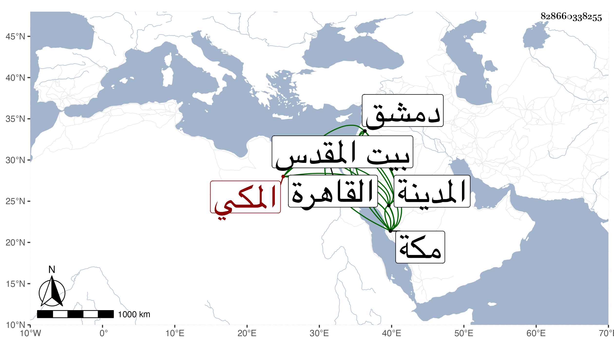

0902Sakhawi.DawLamic.ITO20230111-ara1.EIS1600.828660338255
Biography ID: 828660338255
34
أبو بكر بن إبرهيم بن محمد بن مصلح بن إبرهيم المكي الماضي أبوه ويعرف بابن العراقي . ولد في ليلة ثامن رمضان سنة أربعين بمكة ونشأ بها فحفظ القرآن وتلا به على النور على الديروطي ثلاث ختمات لأبي عمرو إفرادا ثم جمعا وببعضه على الشهاب الشوائطي وحضر في صغره مجلس الزين بن عياش وحفظ المنهاج ومختصر أبي شجاع وألفية النحو والشاطبية وأخذ في الفقه عن الزين خطاب وامام الكاملية وقرأ في النحو على البدر حسن المرجاني وإبرهيم الشرعبي وعنه أخذ في الحساب وسمع على أبي الفتح المراغي والتقى بن فهد وغيرهما وخلف والده في الاعتمار والانجماع ومزيد التودد والتوجه للطائف والمدينة لكن أحيانا مع القيام بالبيمارستان وغيره وسيرته حميدة وقد زاد على أبيه بحفظ القرآن وتلاوته وعدم ذكره للناس وفاته فقد الأقوام الناظرين في المصالح الذين كانت تجري خيراتهم على يد أبيه في المرستان وغيره بحيث كثرت ديونه وعياله . وقدم القاهرة في سنة إحدى وتسعين وتوجه منها لدمشق في المطالبة بشيء يتعلق بالبيمارستان ثم توجه لزيارة بيت المقدس فاعتمر وعاد لمكة وأرسل بولده عبد الرحمن في التي بعدها ففعل كأبيه ولم يحصل لهما الغرض وتزايدت الديون وتعب خاطره بكثرة عياله وقلة متحصله ونعم الرجل .
